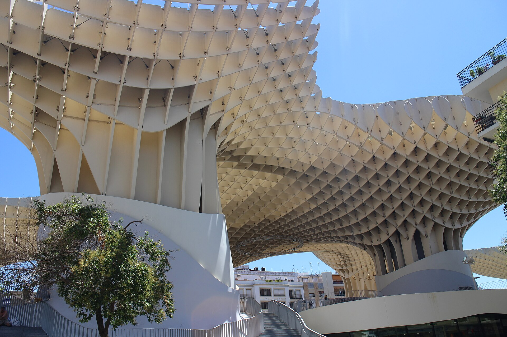
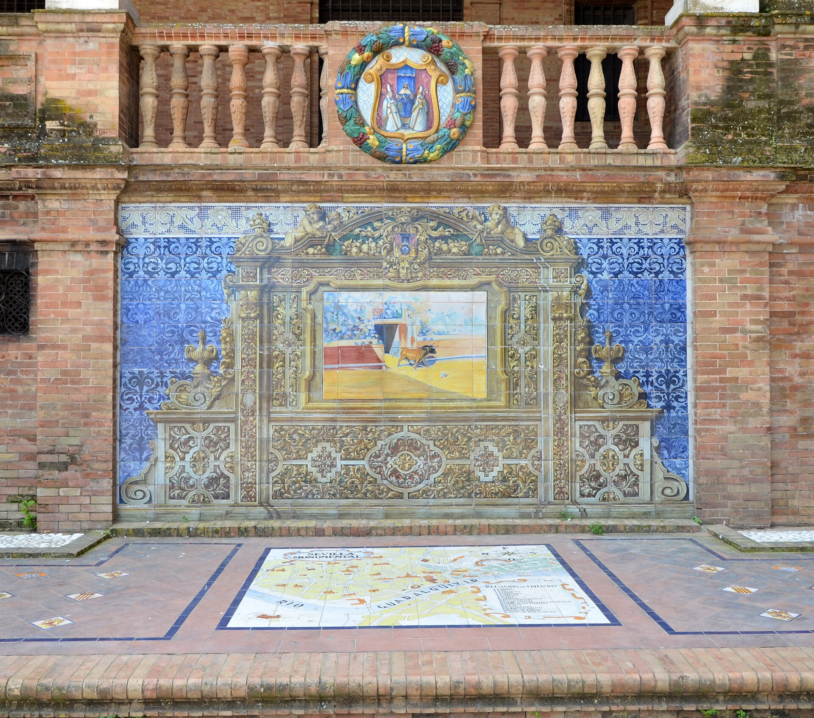

Gabriel Karajallo
Programador full-stack en Sevilla
Programador full-stack en Sevilla. Construyo aplicaciones web con .NET / C# y React, de la base de datos a la interfaz.
En Wortach desde 2025 Backend en .NET y C#, frontend en React con TypeScript.
- Yo
- Interfaz
- API
- Datos
- Sistemas
De sistemas a software
Empecé administrando servidores, redes y Active Directory. Hoy escribo las aplicaciones que corren encima.
Soy técnico superior en Administración de Sistemas Informáticos en Red, pero lo que me engancha es construir software. En Wortach desarrollo productos internos y de cliente: el backend en .NET y C#, el frontend en React con TypeScript, y el diseño y mantenimiento de las bases de datos que los sostienen.
Conocer la parte de sistemas me ayuda a escribir código que se despliega sin sorpresas y a encontrar rápido dónde está el problema cuando algo falla. Lo que más disfruto es hacer interfaces que la gente entiende a la primera.
Pregúntale a mi API
{
"nombre": "Gabriel Karajallo",
"rol": "Programador full-stack",
"ubicacion": "Sevilla",
"empresa": "Wortach",
"desde": "2025-07",
"idiomas": { "español": "nativo", "inglés": "B1" }
}

Metropol Parasol, Sevilla
Experiencia
-
Programador full-stack
Desarrollo y mantengo aplicaciones web empresariales, internas y de cliente, en todo el ciclo: nuevas funcionalidades, optimización del rendimiento y resolución de incidencias.
Backend en .NET y C#, frontend en React con TypeScript, y colaboración en el diseño y mantenimiento de las bases de datos. Formo parte del equipo que construye soluciones escalables y cuida la calidad del software.
-
Desarrollador front-end
Interfaces web responsivas con Angular y TypeScript, trabajando codo con codo con el equipo de diseño para convertir prototipos en aplicaciones que funcionan.
Integración de APIs REST con los servicios backend, pruebas para asegurar la calidad del código y trabajo ágil: sprints, revisiones de código y Git.
-
CFGS Administración de Sistemas Informáticos en Red
Windows Server y Linux, Active Directory, redes, virtualización con VirtualBox y administración de MySQL y Oracle. La base que hoy uso para entender lo que pasa debajo de cada aplicación.
Qué construyo
Cuatro tipos de trabajo que hago cada semana, de la base de datos a la pantalla.
-
Ana TorresAdministraciónPablo GilAlmacénRocío SanzVentasJavier LeónVentas
Aplicaciones de empresa
Herramientas internas que un equipo usa a diario: gestión, informes y permisos.
-
Nueva incidencia Enviar
Interfaces claras
Del prototipo de diseño a una pantalla responsive, accesible y probada.
-
POST /api/incidencias
{ "asunto": "No carga el informe", "prioridad": "media" }201 Created · Location: /api/incidencias/318
APIs en .NET
Endpoints REST que conectan cada pantalla con sus datos, validados y documentados.
-
ClientesId · intNombre · nvarcharCif · char(9)PedidosId · intClienteId · intTotal · decimal
Bases de datos
Esquemas en SQL Server pensados antes de escribir la primera línea de código.
Herramientas
- React
- TypeScript
- Angular
- React Native
- C#
- .NET
- Java
- PHP
- SQL Server
- MySQL
- Oracle
- Git
- Windows Server
- Active Directory
Hablemos
Busco proyectos donde seguir aprendiendo y aportar. Si tienes uno, escríbeme.
- Teléfono
- +34 610 97 04 64
- gabrielkarajallo
- Ciudad
- Sevilla, España
- Idiomas
- Español nativo · Inglés B1